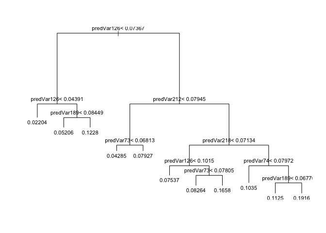
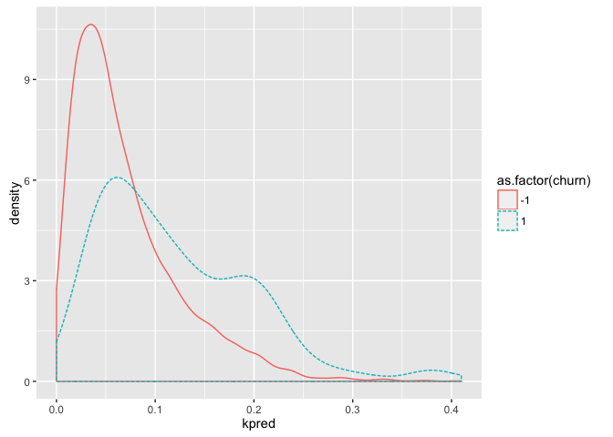
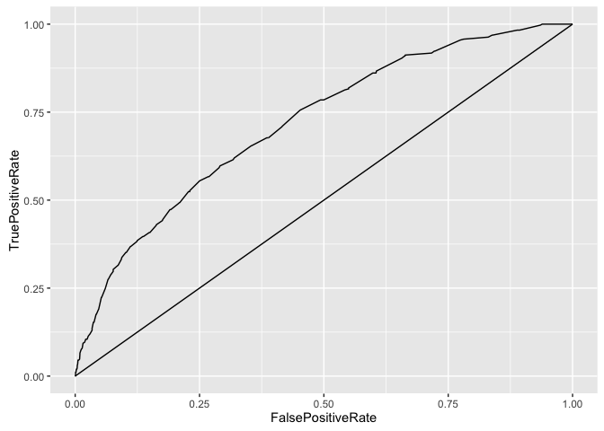

runDir('../CodeExamples/c06_Memorization_methods',
'../KDD2009')
[1] "############################### start 71 Mon Nov 7 20:19:12 2016"
[1] "##### running ../CodeExamples/c06_Memorization_methods/00071_example_6.1_of_section_6.1.1.R"
[1] "##### in directory ../KDD2009"
> # example 6.1 of section 6.1.1
> # (example 6.1 of section 6.1.1) : Memorization methods : KDD and KDD Cup 2009 : Getting started with KDD Cup 2009 data
> # Title: Preparing the KDD data for analysis
>
> d <- read.table('orange_small_train.data.gz', # Note: 1
header=T,
sep='\t',
na.strings=c('NA','')) # Note: 2
> churn <- read.table('orange_small_train_churn.labels.txt',
header=F,sep='\t') # Note: 3
> d$churn <- churn$V1 # Note: 4
> appetency <- read.table('orange_small_train_appetency.labels.txt',
header=F,sep='\t')
> d$appetency <- appetency$V1 # Note: 5
> upselling <- read.table('orange_small_train_upselling.labels.txt',
header=F,sep='\t')
> d$upselling <- upselling$V1 # Note: 6
> set.seed(729375) # Note: 7
> d$rgroup <- runif(dim(d)[[1]])
> dTrainAll <- subset(d,rgroup<=0.9)
> dTest <- subset(d,rgroup>0.9) # Note: 8
> outcomes=c('churn','appetency','upselling')
> vars <- setdiff(colnames(dTrainAll),
c(outcomes,'rgroup'))
> catVars <- vars[sapply(dTrainAll[,vars],class) %in%
c('factor','character')] # Note: 9
> numericVars <- vars[sapply(dTrainAll[,vars],class) %in%
c('numeric','integer')] # Note: 10
> rm(list=c('d','churn','appetency','upselling')) # Note: 11
> outcome <- 'churn' # Note: 12
> pos <- '1' # Note: 13
> useForCal <- rbinom(n=dim(dTrainAll)[[1]],size=1,prob=0.1)>0 # Note: 14
> dCal <- subset(dTrainAll,useForCal)
> dTrain <- subset(dTrainAll,!useForCal)
> # Note 1:
> # Read the file of independent variables. All
> # data from
> # https://github.com/WinVector/zmPDSwR/tree/master/KDD2009.
>
> # Note 2:
> # Treat both NA and the empty string as missing
> # data.
>
> # Note 3:
> # Read churn dependent variable.
>
> # Note 4:
> # Add churn as a new column.
>
> # Note 5:
> # Add appetency as a new column.
>
> # Note 6:
> # Add upselling as a new column.
>
> # Note 7:
> # By setting the seed to the pseudo-random
> # number generator, we make our work reproducible:
> # someone redoing it will see the exact same
> # results.
>
> # Note 8:
> # Split data into train and test subsets.
>
> # Note 9:
> # Identify which features are categorical
> # variables.
>
> # Note 10:
> # Identify which features are numeric
> # variables.
>
> # Note 11:
> # Remove unneeded objects from workspace.
>
> # Note 12:
> # Choose which outcome to model (churn).
>
> # Note 13:
> # Choose which outcome is considered
> # positive.
>
> # Note 14:
> # Further split training data into training and
> # calibration.
>
[1] "############################### end 71 Mon Nov 7 20:19:18 2016"
[1] "############################### start 72 Mon Nov 7 20:19:18 2016"
[1] "##### running ../CodeExamples/c06_Memorization_methods/00072_example_6.2_of_section_6.2.1.R"
[1] "##### in directory ../KDD2009"
> # example 6.2 of section 6.2.1
> # (example 6.2 of section 6.2.1) : Memorization methods : Building single-variable models : Using categorical features
> # Title: Plotting churn grouped by variable 218 levels
>
> table218 <- table(
Var218=dTrain[,'Var218'], # Note: 1
churn=dTrain[,outcome], # Note: 2
useNA='ifany') # Note: 3
> print(table218)
churn
Var218 -1 1
cJvF 19245 1220
UYBR 17860 1618
<NA> 423 152
> ## churn
> ## Var218 -1 1
> ## cJvF 19245 1220
> ## UYBR 17860 1618
> ## <NA> 423 152
> # Note this listing was updated: 10-14-2014 as some of results in the book were
> # accidentally from older code. Will update later listings as we go forward.
>
> # Note 1:
> # Tabulate levels of Var218.
>
> # Note 2:
> # Tabulate levels of churn outcome.
>
> # Note 3:
> # Include NA values in tabulation.
>
[1] "############################### end 72 Mon Nov 7 20:19:18 2016"
[1] "############################### start 73 Mon Nov 7 20:19:18 2016"
[1] "##### running ../CodeExamples/c06_Memorization_methods/00073_example_6.3_of_section_6.2.1.R"
[1] "##### in directory ../KDD2009"
> # example 6.3 of section 6.2.1
> # (example 6.3 of section 6.2.1) : Memorization methods : Building single-variable models : Using categorical features
> # Title: Churn rates grouped by variable 218 codes
>
> print(table218[,2]/(table218[,1]+table218[,2]))
cJvF UYBR <NA>
0.05961398 0.08306808 0.26434783
> ## cJvF UYBR <NA>
> ## 0.05994389 0.08223821 0.26523297
>
[1] "############################### end 73 Mon Nov 7 20:19:18 2016"
[1] "############################### start 74 Mon Nov 7 20:19:18 2016"
[1] "##### running ../CodeExamples/c06_Memorization_methods/00074_example_6.4_of_section_6.2.1.R"
[1] "##### in directory ../KDD2009"
> # example 6.4 of section 6.2.1
> # (example 6.4 of section 6.2.1) : Memorization methods : Building single-variable models : Using categorical features
> # Title: Function to build single-variable models for categorical variables
>
> mkPredC <- function(outCol,varCol,appCol) { # Note: 1
pPos <- sum(outCol==pos)/length(outCol) # Note: 2
naTab <- table(as.factor(outCol[is.na(varCol)]))
pPosWna <- (naTab/sum(naTab))[as.character(pos)] # Note: 3
vTab <- table(as.factor(outCol),varCol)
pPosWv <- (vTab[as.character(pos),]+1.0e-3*pPos)/(colSums(vTab)+1.0e-3) # Note: 4
pred <- pPosWv[appCol] # Note: 5
pred[is.na(appCol)] <- pPosWna # Note: 6
pred[is.na(pred)] <- pPos # Note: 7
pred # Note: 8
}
> # Note 1:
> # Given a vector of training outcomes (outCol),
> # a categorical training variable (varCol), and a
> # prediction variable (appCol), use outCol and
> # varCol to build a single-variable model and then
> # apply the model to appCol to get new
> # predictions.
>
> # Note 2:
> # Get stats on how often outcome is positive
> # during training.
>
> # Note 3:
> # Get stats on how often outcome is positive for
> # NA values of variable during training.
>
> # Note 4:
> # Get stats on how often outcome is positive,
> # conditioned on levels of training variable.
>
> # Note 5:
> # Make predictions by looking up levels of
> # appCol.
>
> # Note 6:
> # Add in predictions for NA levels of
> # appCol.
>
> # Note 7:
> # Add in predictions for levels of appCol that
> # weren’t known during training.
>
> # Note 8:
> # Return vector of predictions.
>
[1] "############################### end 74 Mon Nov 7 20:19:18 2016"
[1] "############################### start 75 Mon Nov 7 20:19:18 2016"
[1] "##### running ../CodeExamples/c06_Memorization_methods/00075_example_6.5_of_section_6.2.1.R"
[1] "##### in directory ../KDD2009"
> # example 6.5 of section 6.2.1
> # (example 6.5 of section 6.2.1) : Memorization methods : Building single-variable models : Using categorical features
> # Title: Applying single-categorical variable models to all of our datasets
>
> for(v in catVars) {
pi <- paste('pred',v,sep='')
dTrain[,pi] <- mkPredC(dTrain[,outcome],dTrain[,v],dTrain[,v])
dCal[,pi] <- mkPredC(dTrain[,outcome],dTrain[,v],dCal[,v])
dTest[,pi] <- mkPredC(dTrain[,outcome],dTrain[,v],dTest[,v])
}
[1] "############################### end 75 Mon Nov 7 20:19:20 2016"
[1] "############################### start 76 Mon Nov 7 20:19:20 2016"
[1] "##### running ../CodeExamples/c06_Memorization_methods/00076_example_6.6_of_section_6.2.1.R"
[1] "##### in directory ../KDD2009"
> # example 6.6 of section 6.2.1
> # (example 6.6 of section 6.2.1) : Memorization methods : Building single-variable models : Using categorical features
> # Title: Scoring categorical variables by AUC
>
> library('ROCR')
Loading required package: gplots
Attaching package: 'gplots'
The following object is masked from 'package:stats':
lowess
> calcAUC <- function(predcol,outcol) {
perf <- performance(prediction(predcol,outcol==pos),'auc')
as.numeric(perf@y.values)
}
> for(v in catVars) {
pi <- paste('pred',v,sep='')
aucTrain <- calcAUC(dTrain[,pi],dTrain[,outcome])
if(aucTrain>=0.8) {
aucCal <- calcAUC(dCal[,pi],dCal[,outcome])
print(sprintf("%s, trainAUC: %4.3f calibrationAUC: %4.3f",
pi,aucTrain,aucCal))
}
}
[1] "predVar200, trainAUC: 0.830 calibrationAUC: 0.565"
[1] "predVar202, trainAUC: 0.827 calibrationAUC: 0.525"
[1] "predVar214, trainAUC: 0.830 calibrationAUC: 0.565"
[1] "predVar217, trainAUC: 0.897 calibrationAUC: 0.553"
> ## [1] "predVar200, trainAUC: 0.828 calibrationAUC: 0.527"
> ## [1] "predVar202, trainAUC: 0.829 calibrationAUC: 0.522"
> ## [1] "predVar214, trainAUC: 0.828 calibrationAUC: 0.527"
> ## [1] "predVar217, trainAUC: 0.898 calibrationAUC: 0.553"
>
[1] "############################### end 76 Mon Nov 7 20:19:21 2016"
[1] "############################### start 77 Mon Nov 7 20:19:21 2016"
[1] "##### running ../CodeExamples/c06_Memorization_methods/00077_example_6.7_of_section_6.2.2.R"
[1] "##### in directory ../KDD2009"
> # example 6.7 of section 6.2.2
> # (example 6.7 of section 6.2.2) : Memorization methods : Building single-variable models : Using numeric features
> # Title: Scoring numeric variables by AUC
>
> mkPredN <- function(outCol,varCol,appCol) {
cuts <- unique(as.numeric(quantile(varCol,
probs=seq(0, 1, 0.1),na.rm=T)))
varC <- cut(varCol,cuts)
appC <- cut(appCol,cuts)
mkPredC(outCol,varC,appC)
}
> for(v in numericVars) {
pi <- paste('pred',v,sep='')
dTrain[,pi] <- mkPredN(dTrain[,outcome],dTrain[,v],dTrain[,v])
dTest[,pi] <- mkPredN(dTrain[,outcome],dTrain[,v],dTest[,v])
dCal[,pi] <- mkPredN(dTrain[,outcome],dTrain[,v],dCal[,v])
aucTrain <- calcAUC(dTrain[,pi],dTrain[,outcome])
if(aucTrain>=0.55) {
aucCal <- calcAUC(dCal[,pi],dCal[,outcome])
print(sprintf("%s, trainAUC: %4.3f calibrationAUC: %4.3f",
pi,aucTrain,aucCal))
}
}
[1] "predVar6, trainAUC: 0.557 calibrationAUC: 0.554"
[1] "predVar7, trainAUC: 0.555 calibrationAUC: 0.565"
[1] "predVar13, trainAUC: 0.568 calibrationAUC: 0.553"
[1] "predVar73, trainAUC: 0.608 calibrationAUC: 0.616"
[1] "predVar74, trainAUC: 0.574 calibrationAUC: 0.566"
[1] "predVar81, trainAUC: 0.558 calibrationAUC: 0.542"
[1] "predVar113, trainAUC: 0.557 calibrationAUC: 0.567"
[1] "predVar126, trainAUC: 0.635 calibrationAUC: 0.629"
[1] "predVar140, trainAUC: 0.561 calibrationAUC: 0.560"
[1] "predVar189, trainAUC: 0.574 calibrationAUC: 0.599"
> ## [1] "predVar6, trainAUC: 0.557 calibrationAUC: 0.554"
> ## [1] "predVar7, trainAUC: 0.555 calibrationAUC: 0.565"
> ## [1] "predVar13, trainAUC: 0.568 calibrationAUC: 0.553"
> ## [1] "predVar73, trainAUC: 0.608 calibrationAUC: 0.616"
> ## [1] "predVar74, trainAUC: 0.574 calibrationAUC: 0.566"
> ## [1] "predVar81, trainAUC: 0.558 calibrationAUC: 0.542"
> ## [1] "predVar113, trainAUC: 0.557 calibrationAUC: 0.567"
> ## [1] "predVar126, trainAUC: 0.635 calibrationAUC: 0.629"
> ## [1] "predVar140, trainAUC: 0.561 calibrationAUC: 0.560"
> ## [1] "predVar189, trainAUC: 0.574 calibrationAUC: 0.599"
>
[1] "############################### end 77 Mon Nov 7 20:19:39 2016"
[1] "############################### start 78 Mon Nov 7 20:19:39 2016"
[1] "##### running ../CodeExamples/c06_Memorization_methods/00078_example_6.8_of_section_6.2.2.R"
[1] "##### in directory ../KDD2009"
> # example 6.8 of section 6.2.2
> # (example 6.8 of section 6.2.2) : Memorization methods : Building single-variable models : Using numeric features
> # Title: Plotting variable performance
>
> library('ggplot2')
> ggplot(data=dCal) +
geom_density(aes(x=predVar126,color=as.factor(churn)))
[1] "############################### end 78 Mon Nov 7 20:19:40 2016"
[1] "############################### start 79 Mon Nov 7 20:19:40 2016"
[1] "##### running ../CodeExamples/c06_Memorization_methods/00079_example_6.9_of_section_6.2.3.R"
[1] "##### in directory ../KDD2009"
> # example 6.9 of section 6.2.3
> # (example 6.9 of section 6.2.3) : Memorization methods : Building single-variable models : Using cross-validation to estimate effects of overfitting
> # Title: Running a repeated cross-validation experiment
>
> var <- 'Var217'
> aucs <- rep(0,100)
> for(rep in 1:length(aucs)) { # Note: 1
useForCalRep <- rbinom(n=dim(dTrainAll)[[1]],size=1,prob=0.1)>0 # Note: 2
predRep <- mkPredC(dTrainAll[!useForCalRep,outcome], # Note: 3
dTrainAll[!useForCalRep,var],
dTrainAll[useForCalRep,var])
aucs[rep] <- calcAUC(predRep,dTrainAll[useForCalRep,outcome]) # Note: 4
}
> mean(aucs)
[1] 0.5548469
> ## [1] 0.5556656
> sd(aucs)
[1] 0.01569641
> ## [1] 0.01569345
>
> # Note 1:
> # For 100 iterations...
>
> # Note 2:
> # ...select a random subset of about 10% of the training data as hold-out set,...
>
> # Note 3:
> # ...use the random 90% of training data to train model and evaluate that model on hold-out
> # set,...
>
> # Note 4:
> # ...calculate resulting model’s AUC using hold-out set; store that value and repeat.
>
[1] "############################### end 79 Mon Nov 7 20:19:43 2016"
[1] "############################### start 80 Mon Nov 7 20:19:43 2016"
[1] "##### running ../CodeExamples/c06_Memorization_methods/00080_example_6.10_of_section_6.2.3.R"
[1] "##### in directory ../KDD2009"
> # example 6.10 of section 6.2.3
> # (example 6.10 of section 6.2.3) : Memorization methods : Building single-variable models : Using cross-validation to estimate effects of overfitting
> # Title: Empirically cross-validating performance
>
> fCross <- function() {
useForCalRep <- rbinom(n=dim(dTrainAll)[[1]],size=1,prob=0.1)>0
predRep <- mkPredC(dTrainAll[!useForCalRep,outcome],
dTrainAll[!useForCalRep,var],
dTrainAll[useForCalRep,var])
calcAUC(predRep,dTrainAll[useForCalRep,outcome])
}
> aucs <- replicate(100,fCross())
[1] "############################### end 80 Mon Nov 7 20:19:46 2016"
[1] "############################### start 81 Mon Nov 7 20:19:46 2016"
[1] "##### running ../CodeExamples/c06_Memorization_methods/00081_example_6.11_of_section_6.3.1.R"
[1] "##### in directory ../KDD2009"
> # example 6.11 of section 6.3.1
> # (example 6.11 of section 6.3.1) : Memorization methods : Building models using many variables : Variable selection
> # Title: Basic variable selection
>
> # Each variable we use represents a chance of explaining
> # more of the outcome variation (a chance of building a better
> # model) but also represents a possible source of noise and
> # overfitting. To control this effect, we often preselect
> # which subset of variables we’ll use to fit. Variable
> # selection can be an important defensive modeling step even
> # for types of models that “don’t need it” (as seen with
> # decision trees in section 6.3.2). Listing 6.11 shows a
> # hand-rolled variable selection loop where each variable is
> # scored according to a deviance inspired score, where a
> # variable is scored with a bonus proportional to the change
> # in in scaled log likelihood of the training data. We could
> # also try an AIC (Akaike information criterion) by
> # subtracting a penalty proportional to the complexity of the
> # variable (which in this case is 2^entropy for categorical
> # variables and a stand-in of 1 for numeric variables). The
> # score is a bit ad hoc, but tends to work well in selecting
> # variables. Notice we’re using performance on the calibration
> # set (not the training set) to pick variables. Note that we
> # don’t use the test set for calibration; to do so lessens the
> # reliability of the test set for model quality confirmation.
>
> logLikelyhood <- function(outCol,predCol) { # Note: 1
sum(ifelse(outCol==pos,log(predCol),log(1-predCol)))
}
> selVars <- c()
> minStep <- 5
> baseRateCheck <- logLikelyhood(dCal[,outcome],
sum(dCal[,outcome]==pos)/length(dCal[,outcome]))
> for(v in catVars) { # Note: 2
pi <- paste('pred',v,sep='')
liCheck <- 2*((logLikelyhood(dCal[,outcome],dCal[,pi]) -
baseRateCheck))
if(liCheck>minStep) {
print(sprintf("%s, calibrationScore: %g",
pi,liCheck))
selVars <- c(selVars,pi)
}
}
[1] "predVar194, calibrationScore: 5.25759"
[1] "predVar201, calibrationScore: 5.25521"
[1] "predVar204, calibrationScore: 5.37414"
[1] "predVar205, calibrationScore: 24.2323"
[1] "predVar206, calibrationScore: 34.4434"
[1] "predVar210, calibrationScore: 10.6681"
[1] "predVar212, calibrationScore: 6.23409"
[1] "predVar218, calibrationScore: 13.2455"
[1] "predVar221, calibrationScore: 12.4098"
[1] "predVar225, calibrationScore: 22.9074"
[1] "predVar226, calibrationScore: 6.68931"
[1] "predVar228, calibrationScore: 15.9644"
[1] "predVar229, calibrationScore: 24.4946"
> for(v in numericVars) { # Note: 3
pi <- paste('pred',v,sep='')
liCheck <- 2*((logLikelyhood(dCal[,outcome],dCal[,pi]) -
baseRateCheck))
if(liCheck>=minStep) {
print(sprintf("%s, calibrationScore: %g",
pi,liCheck))
selVars <- c(selVars,pi)
}
}
[1] "predVar6, calibrationScore: 13.2431"
[1] "predVar7, calibrationScore: 18.685"
[1] "predVar13, calibrationScore: 10.0632"
[1] "predVar28, calibrationScore: 11.3864"
[1] "predVar65, calibrationScore: 9.96938"
[1] "predVar72, calibrationScore: 12.5353"
[1] "predVar73, calibrationScore: 48.2524"
[1] "predVar74, calibrationScore: 19.6324"
[1] "predVar81, calibrationScore: 8.8741"
[1] "predVar113, calibrationScore: 23.136"
[1] "predVar125, calibrationScore: 6.06029"
[1] "predVar126, calibrationScore: 74.9556"
[1] "predVar134, calibrationScore: 5.68144"
[1] "predVar140, calibrationScore: 16.1816"
[1] "predVar144, calibrationScore: 15.9858"
[1] "predVar189, calibrationScore: 42.3059"
> # Note 1:
> # Define a convenience function to compute log
> # likelihood.
>
> # Note 2:
> # Run through categorical variables and pick
> # based on a deviance improvement (related to
> # difference in log likelihoods; see chapter
> # 3).
>
> # Note 3:
> # Run through numeric variables and pick
> # based on a deviance improvement.
>
[1] "############################### end 81 Mon Nov 7 20:19:46 2016"
[1] "############################### start 83 Mon Nov 7 20:19:46 2016"
[1] "##### running ../CodeExamples/c06_Memorization_methods/00083_example_6.13_of_section_6.3.2.R"
[1] "##### in directory ../KDD2009"
> # example 6.13 of section 6.3.2
> # (example 6.13 of section 6.3.2) : Memorization methods : Building models using many variables : Using decision trees
> # Title: Building a bad decision tree
>
> library('rpart')
> fV <- paste(outcome,'>0 ~ ',
paste(c(catVars,numericVars),collapse=' + '),sep='')
> tmodel <- rpart(fV,data=dTrain)
> print(calcAUC(predict(tmodel,newdata=dTrain),dTrain[,outcome]))
[1] 0.9241265
> ## [1] 0.9241265
> print(calcAUC(predict(tmodel,newdata=dTest),dTest[,outcome]))
[1] 0.5266172
> ## [1] 0.5266172
> print(calcAUC(predict(tmodel,newdata=dCal),dCal[,outcome]))
[1] 0.5126917
> ## [1] 0.5126917
>
[1] "############################### end 83 Mon Nov 7 20:20:14 2016"
[1] "############################### start 84 Mon Nov 7 20:20:14 2016"
[1] "##### running ../CodeExamples/c06_Memorization_methods/00084_example_6.14_of_section_6.3.2.R"
[1] "##### in directory ../KDD2009"
> # example 6.14 of section 6.3.2
> # (example 6.14 of section 6.3.2) : Memorization methods : Building models using many variables : Using decision trees
> # Title: Building another bad decision tree
>
> tVars <- paste('pred',c(catVars,numericVars),sep='')
> fV2 <- paste(outcome,'>0 ~ ',paste(tVars,collapse=' + '),sep='')
> tmodel <- rpart(fV2,data=dTrain)
> print(calcAUC(predict(tmodel,newdata=dTrain),dTrain[,outcome]))
[1] 0.928669
> ## [1] 0.928669
> print(calcAUC(predict(tmodel,newdata=dTest),dTest[,outcome]))
[1] 0.5390648
> ## [1] 0.5390648
> print(calcAUC(predict(tmodel,newdata=dCal),dCal[,outcome]))
[1] 0.5384152
> ## [1] 0.5384152
>
[1] "############################### end 84 Mon Nov 7 20:20:29 2016"
[1] "############################### start 85 Mon Nov 7 20:20:29 2016"
[1] "##### running ../CodeExamples/c06_Memorization_methods/00085_example_6.15_of_section_6.3.2.R"
[1] "##### in directory ../KDD2009"
> # example 6.15 of section 6.3.2
> # (example 6.15 of section 6.3.2) : Memorization methods : Building models using many variables : Using decision trees
> # Title: Building yet another bad decision tree
>
> tmodel <- rpart(fV2,data=dTrain,
control=rpart.control(cp=0.001,minsplit=1000,
minbucket=1000,maxdepth=5)
)
> print(calcAUC(predict(tmodel,newdata=dTrain),dTrain[,outcome]))
[1] 0.9421195
> ## [1] 0.9421195
> print(calcAUC(predict(tmodel,newdata=dTest),dTest[,outcome]))
[1] 0.5794633
> ## [1] 0.5794633
> print(calcAUC(predict(tmodel,newdata=dCal),dCal[,outcome]))
[1] 0.547967
> ## [1] 0.547967
>
[1] "############################### end 85 Mon Nov 7 20:20:39 2016"
[1] "############################### start 86 Mon Nov 7 20:20:39 2016"
[1] "##### running ../CodeExamples/c06_Memorization_methods/00086_example_6.16_of_section_6.3.2.R"
[1] "##### in directory ../KDD2009"
> # example 6.16 of section 6.3.2
> # (example 6.16 of section 6.3.2) : Memorization methods : Building models using many variables : Using decision trees
> # Title: Building a better decision tree
>
> f <- paste(outcome,'>0 ~ ',paste(selVars,collapse=' + '),sep='')
> tmodel <- rpart(f,data=dTrain,
control=rpart.control(cp=0.001,minsplit=1000,
minbucket=1000,maxdepth=5)
)
> print(calcAUC(predict(tmodel,newdata=dTrain),dTrain[,outcome]))
[1] 0.6906852
> ## [1] 0.6906852
> print(calcAUC(predict(tmodel,newdata=dTest),dTest[,outcome]))
[1] 0.6843595
> ## [1] 0.6843595
> print(calcAUC(predict(tmodel,newdata=dCal),dCal[,outcome]))
[1] 0.6669301
> ## [1] 0.6669301
>
[1] "############################### end 86 Mon Nov 7 20:20:41 2016"
[1] "############################### start 87 Mon Nov 7 20:20:41 2016"
[1] "##### running ../CodeExamples/c06_Memorization_methods/00087_example_6.17_of_section_6.3.2.R"
[1] "##### in directory ../KDD2009"
> # example 6.17 of section 6.3.2
> # (example 6.17 of section 6.3.2) : Memorization methods : Building models using many variables : Using decision trees
> # Title: Printing the decision tree
>
> print(tmodel)
n= 40518
node), split, n, deviance, yval
* denotes terminal node
1) root 40518 2769.3550 0.07379436
2) predVar126< 0.07366888 18188 726.4097 0.04167583
4) predVar126< 0.04391312 8804 189.7251 0.02203544 *
5) predVar126>=0.04391312 9384 530.1023 0.06010230
10) predVar189< 0.08449448 8317 410.4571 0.05206204 *
11) predVar189>=0.08449448 1067 114.9166 0.12277410 *
3) predVar126>=0.07366888 22330 2008.9000 0.09995522
6) predVar212< 0.07944508 8386 484.2499 0.06153112
12) predVar73< 0.06813291 4084 167.5012 0.04285015 *
13) predVar73>=0.06813291 4302 313.9705 0.07926546 *
7) predVar212>=0.07944508 13944 1504.8230 0.12306370
14) predVar218< 0.07134103 6728 580.7390 0.09542212
28) predVar126< 0.1015407 3901 271.8426 0.07536529 *
29) predVar126>=0.1015407 2827 305.1617 0.12309870
58) predVar73< 0.07804522 1452 110.0826 0.08264463 *
59) predVar73>=0.07804522 1375 190.1935 0.16581820 *
15) predVar218>=0.07134103 7216 914.1502 0.14883590
30) predVar74< 0.0797246 2579 239.3579 0.10352850 *
31) predVar74>=0.0797246 4637 666.5538 0.17403490
62) predVar189< 0.06775545 1031 102.9486 0.11251210 *
63) predVar189>=0.06775545 3606 558.5871 0.19162510 *
> ## n= 40518
> ##
> ## node), split, n, deviance, yval
> ## * denotes terminal node
> ##
> ## 1) root 40518 2769.3550 0.07379436
> ## 2) predVar126< 0.07366888 18188 726.4097 0.04167583
> ## 4) predVar126< 0.04391312 8804 189.7251 0.02203544 *
> ## 5) predVar126>=0.04391312 9384 530.1023 0.06010230
> ## 10) predVar189< 0.08449448 8317 410.4571 0.05206204 *
> ## 11) predVar189>=0.08449448 1067 114.9166 0.12277410 *
> ## 3) predVar126>=0.07366888 22330 2008.9000 0.09995522
> ## 6) predVar212< 0.07944508 8386 484.2499 0.06153112
> ## 12) predVar73< 0.06813291 4084 167.5012 0.04285015 *
> ## 13) predVar73>=0.06813291 4302 313.9705 0.07926546 *
> ## 7) predVar212>=0.07944508 13944 1504.8230 0.12306370
> ## 14) predVar218< 0.07134103 6728 580.7390 0.09542212
> ## 28) predVar126< 0.1015407 3901 271.8426 0.07536529 *
> ## 29) predVar126>=0.1015407 2827 305.1617 0.12309870
> ## 58) predVar73< 0.07804522 1452 110.0826 0.08264463 *
> ## 59) predVar73>=0.07804522 1375 190.1935 0.16581820 *
> ## 15) predVar218>=0.07134103 7216 914.1502 0.14883590
> ## 30) predVar74< 0.0797246 2579 239.3579 0.10352850 *
> ## 31) predVar74>=0.0797246 4637 666.5538 0.17403490
> ## 62) predVar189< 0.06775545 1031 102.9486 0.11251210 *
> ## 63) predVar189>=0.06775545 3606 558.5871 0.19162510 *
>
[1] "############################### end 87 Mon Nov 7 20:20:41 2016"
[1] "############################### start 88 Mon Nov 7 20:20:41 2016"
[1] "##### running ../CodeExamples/c06_Memorization_methods/00088_example_6.18_of_section_6.3.2.R"
[1] "##### in directory ../KDD2009"
> # example 6.18 of section 6.3.2
> # (example 6.18 of section 6.3.2) : Memorization methods : Building models using many variables : Using decision trees
> # Title: Plotting the decision tree
>
> par(cex=0.7)
> plot(tmodel)

> text(tmodel)
[1] "############################### end 88 Mon Nov 7 20:20:42 2016"
[1] "############################### start 89 Mon Nov 7 20:20:42 2016"
[1] "##### running ../CodeExamples/c06_Memorization_methods/00089_example_6.19_of_section_6.3.3.R"
[1] "##### in directory ../KDD2009"
> # example 6.19 of section 6.3.3
> # (example 6.19 of section 6.3.3) : Memorization methods : Building models using many variables : Using nearest neighbor methods
> # Title: Running k-nearest neighbors
>
> library('class')
> nK <- 200
> knnTrain <- dTrain[,selVars] # Note: 1
> knnCl <- dTrain[,outcome]==pos # Note: 2
> knnPred <- function(df) { # Note: 3
knnDecision <- knn(knnTrain,df,knnCl,k=nK,prob=T)
ifelse(knnDecision==TRUE, # Note: 4
attributes(knnDecision)$prob,
1-(attributes(knnDecision)$prob))
}
> print(calcAUC(knnPred(dTrain[,selVars]),dTrain[,outcome]))
[1] 0.7437617
> ## [1] 0.7443927
> print(calcAUC(knnPred(dCal[,selVars]),dCal[,outcome]))
[1] 0.7131476
> ## [1] 0.7119394
> print(calcAUC(knnPred(dTest[,selVars]),dTest[,outcome]))
[1] 0.7179175
> ## [1] 0.718256
>
> # Note 1:
> # Build a data frame with only the variables we
> # wish to use for classification.
>
> # Note 2:
> # Build a vector with the known training
> # outcomes.
>
> # Note 3:
> # Bind the knn() training function with our data
> # in a new function.
>
> # Note 4:
> # Convert knn’s unfortunate convention of
> # calculating probability as “proportion of the
> # votes for the winning class” into the more useful
> # “calculated probability of being a positive
> # example.”
>
[1] "############################### end 89 Mon Nov 7 20:22:15 2016"
[1] "############################### start 90 Mon Nov 7 20:22:15 2016"
[1] "##### running ../CodeExamples/c06_Memorization_methods/00090_example_6.20_of_section_6.3.3.R"
[1] "##### in directory ../KDD2009"
> # example 6.20 of section 6.3.3
> # (example 6.20 of section 6.3.3) : Memorization methods : Building models using many variables : Using nearest neighbor methods
> # Title: Platting 200-nearest neighbor performance
>
> dCal$kpred <- knnPred(dCal[,selVars])
> ggplot(data=dCal) +
geom_density(aes(x=kpred,
color=as.factor(churn),linetype=as.factor(churn)))

[1] "############################### end 90 Mon Nov 7 20:22:24 2016"
[1] "############################### start 91 Mon Nov 7 20:22:24 2016"
[1] "##### running ../CodeExamples/c06_Memorization_methods/00091_example_6.21_of_section_6.3.3.R"
[1] "##### in directory ../KDD2009"
> # example 6.21 of section 6.3.3
> # (example 6.21 of section 6.3.3) : Memorization methods : Building models using many variables : Using nearest neighbor methods
> # Title: Plotting the receiver operating characteristic curve
>
> plotROC <- function(predcol,outcol) {
perf <- performance(prediction(predcol,outcol==pos),'tpr','fpr')
pf <- data.frame(
FalsePositiveRate=perf@x.values[[1]],
TruePositiveRate=perf@y.values[[1]])
ggplot() +
geom_line(data=pf,aes(x=FalsePositiveRate,y=TruePositiveRate)) +
geom_line(aes(x=c(0,1),y=c(0,1)))
}
> print(plotROC(knnPred(dTest[,selVars]),dTest[,outcome]))

[1] "############################### end 91 Mon Nov 7 20:22:33 2016"
[1] "############################### start 92 Mon Nov 7 20:22:33 2016"
[1] "##### running ../CodeExamples/c06_Memorization_methods/00092_example_6.22_of_section_6.3.3.R"
[1] "##### in directory ../KDD2009"
> # example 6.22 of section 6.3.3
> # (example 6.22 of section 6.3.3) : Memorization methods : Building models using many variables : Using nearest neighbor methods
> # Title: Plotting the performance of a logistic regression model
>
> gmodel <- glm(as.formula(f),data=dTrain,family=binomial(link='logit'))
> print(calcAUC(predict(gmodel,newdata=dTrain),dTrain[,outcome]))
[1] 0.7381345
> ## [1] 0.7309537
> print(calcAUC(predict(gmodel,newdata=dTest),dTest[,outcome]))
[1] 0.7270349
> ## [1] 0.7234645
> print(calcAUC(predict(gmodel,newdata=dCal),dCal[,outcome]))
[1] 0.7143337
> ## [1] 0.7170824
>
[1] "############################### end 92 Mon Nov 7 20:22:34 2016"
[1] "############################### start 93 Mon Nov 7 20:22:34 2016"
[1] "##### running ../CodeExamples/c06_Memorization_methods/00093_example_6.23_of_section_6.3.4.R"
[1] "##### in directory ../KDD2009"
> # example 6.23 of section 6.3.4
> # (example 6.23 of section 6.3.4) : Memorization methods : Building models using many variables : Using Naive Bayes
> # Title: Building, applying, and evaluating a Naive Bayes model
>
> pPos <- sum(dTrain[,outcome]==pos)/length(dTrain[,outcome])
> nBayes <- function(pPos,pf) { # Note: 1
pNeg <- 1 - pPos
smoothingEpsilon <- 1.0e-5
scorePos <- log(pPos + smoothingEpsilon) +
rowSums(log(pf/pPos + smoothingEpsilon)) # Note: 2
scoreNeg <- log(pNeg + smoothingEpsilon) +
rowSums(log((1-pf)/(1-pPos) + smoothingEpsilon)) # Note: 3
m <- pmax(scorePos,scoreNeg)
expScorePos <- exp(scorePos-m)
expScoreNeg <- exp(scoreNeg-m) # Note: 4
expScorePos/(expScorePos+expScoreNeg) # Note: 5
}
> pVars <- paste('pred',c(numericVars,catVars),sep='')
> dTrain$nbpredl <- nBayes(pPos,dTrain[,pVars])
> dCal$nbpredl <- nBayes(pPos,dCal[,pVars])
> dTest$nbpredl <- nBayes(pPos,dTest[,pVars]) # Note: 6
> print(calcAUC(dTrain$nbpredl,dTrain[,outcome]))
[1] 0.9757348
> ## [1] 0.9757348
> print(calcAUC(dCal$nbpredl,dCal[,outcome]))
[1] 0.5995206
> ## [1] 0.5995206
> print(calcAUC(dTest$nbpredl,dTest[,outcome]))
[1] 0.5956515
> ## [1] 0.5956515 # Note: 7
>
> # Note 1:
> # Define a function that performs the Naive
> # Bayes prediction.
>
> # Note 2:
> # For each row, compute (with a smoothing term)
> # the sum of log(P[positive &
> # evidence_i]/P[positive]) across all columns. This
> # is equivalent to the log of the product of
> # P[evidence_i | positive] up to terms that don’t
> # depend on the positive/negative outcome.
>
> # Note 3:
> # For each row, compute (with a smoothing term)
> # the sum of log(P[negative &
> # evidence_i]/P[negative]) across all columns. This
> # is equivalent to the log of the product of
> # P[evidence_i | negative] up to terms that don’t
> # depend on the positive/negative outcome.
>
> # Note 4:
> # Exponentiate to turn sums back into products,
> # but make sure we don’t cause a floating point
> # overflow in doing so.
>
> # Note 5:
> # Use the fact that the predicted positive
> # probability plus the predicted negative
> # probability should sum to 1.0 to find and
> # eliminate Z. Return the correctly scaled predicted
> # odds of being positive as our forecast.
>
> # Note 6:
> # Apply the function to make the predictions.
>
> # Note 7:
> # Calculate the AUCs. Notice the
> # overfit—fantastic performance on the training
> # set that isn’t repeated on the calibration or test
> # sets.
>
[1] "############################### end 93 Mon Nov 7 20:22:35 2016"
[1] "############################### start 94 Mon Nov 7 20:22:35 2016"
[1] "##### running ../CodeExamples/c06_Memorization_methods/00094_example_6.24_of_section_6.3.4.R"
[1] "##### in directory ../KDD2009"
> # example 6.24 of section 6.3.4
> # (example 6.24 of section 6.3.4) : Memorization methods : Building models using many variables : Using Naive Bayes
> # Title: Using a Naive Bayes package
>
> library('e1071')
> lVars <- c(catVars,numericVars)
> ff <- paste('as.factor(',outcome,'>0) ~ ',
paste(lVars,collapse=' + '),sep='')
> nbmodel <- naiveBayes(as.formula(ff),data=dTrain)
> dTrain$nbpred <- predict(nbmodel,newdata=dTrain,type='raw')[,'TRUE']
> dCal$nbpred <- predict(nbmodel,newdata=dCal,type='raw')[,'TRUE']
> dTest$nbpred <- predict(nbmodel,newdata=dTest,type='raw')[,'TRUE']
> calcAUC(dTrain$nbpred,dTrain[,outcome])
[1] 0.4643591
> ## [1] 0.4643591
> calcAUC(dCal$nbpred,dCal[,outcome])
[1] 0.5544484
> ## [1] 0.5544484
> calcAUC(dTest$nbpred,dTest[,outcome])
[1] 0.5679519
> ## [1] 0.5679519
>
[1] "############################### end 94 Mon Nov 7 20:24:28 2016"